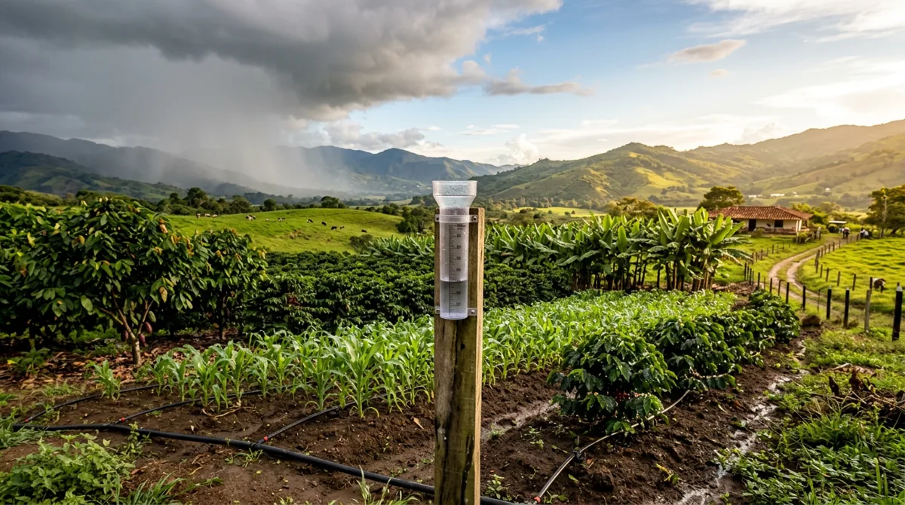

Herramienta en ExcelBalance hídrico y riego en palma de aceite
Anota la lluvia de tus pluviómetros y el Excel te dice el agua disponible en el suelo, el déficit hídrico del año y qué lotes regar hoy, con un semáforo de colores.
Muy pronto a la venta← Ver los demás cursos